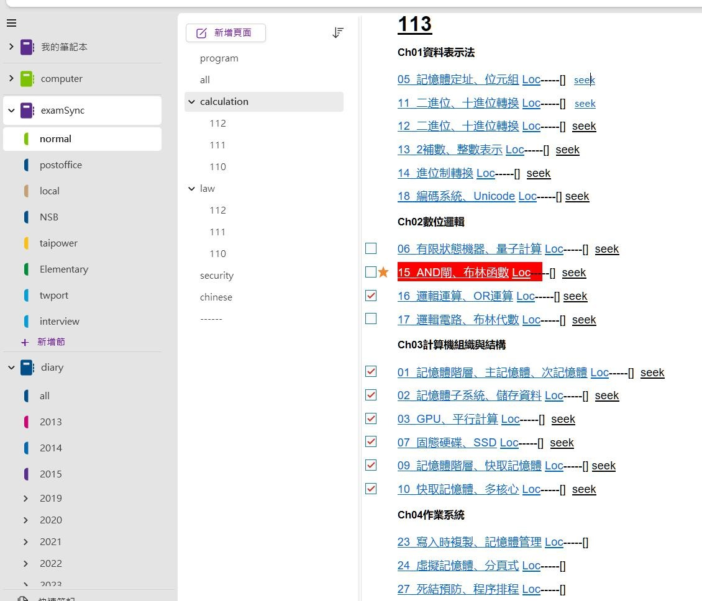
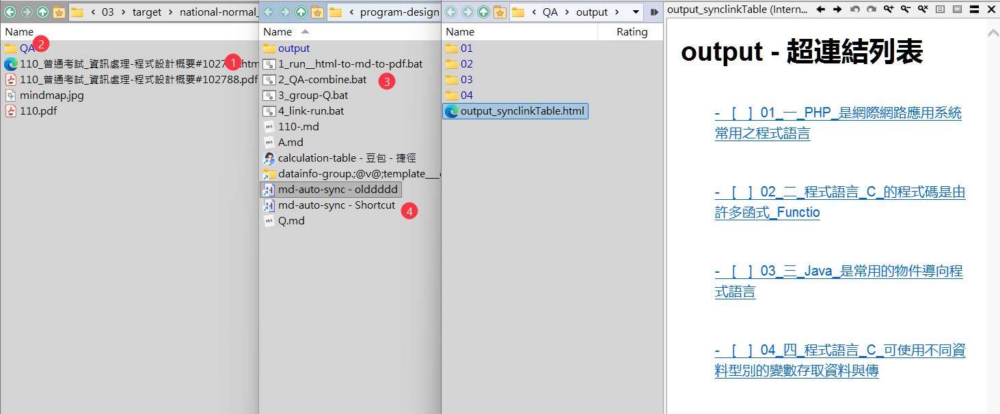

2025 年，在考試準備方面其實比較生活化。因為現今AI工具越來越方便，所以考試題目不再像從前那樣枯燥無聊，不會再讓人覺得乏味。我一直希望能讓考試準備過程更贴近生活，那到底該怎麼做會比較好呢？
就舉例來說，假設我們要複習計算機概論這門科目，面對 40 道選擇題，我們常常會遇到一些頭痛的問題：這些題目具體在考察什麼內容？它們可以歸為哪些類別？當中哪些題目比較困難，哪些又相對簡單？
在過去，我們只能逐題慢慢研讀，遇到不會的內容就容易卡在原地。但現在，我認為可以把整個複習過程拆分成一段一段來處理，具體步驟如下：
首先，我們要先從阿摩線上論壇這類平台，把相關的考試題目通通下載下來，只要能收集到題目就可以。拿到題目之後，接著要先取得每道題目的基礎答案 —— 每道題目對應一個簡短的答案即可，不需要過於詳細。
之後，我們將題目與對應的基礎答案合併，合併完成後就進入分類階段。這時可以借助 AI 的幫助：把所有題目統一丟給 AI，讓 AI 判斷這些題目分別屬於哪些類別。至於分類的依據，建議可以選一本自己最熟悉、最喜歡的計算機概論課本，讓 AI 依照這本書的目錄架構來進行分類。
等 AI 完成分類後，我們再將每道題目的題號，分別移動到對應的類別當中。接下來，透過自動化的方式，把每道題目逐一丟進具備深度思考能力的 AI 工具裡，這一步的目的是希望讓每道題目都能得到延伸解釋。畢竟我們已經有了基礎答案，接下來可以根據題目的實際情況，決定要深入學習到什麼程度 —— 比如先用故事化的方式來闡述題目的背景與解法，透過這種有趣的形式，了解原來某道題目可以用這樣生動的方式解釋。
另外，為了能在各個平台上同步查看這些學習資料，我們還需要確保在手機、平板等移動設備上也能存取這些內容。具體來說，要讓這些筆記資料同時在本機電腦端和網路鏈結上都能生成對應的存取鏈結，這樣無論使用哪個設備，都能隨時查看筆記內容。
透過這樣的方式，逐題進行標記與整理，就能清楚看到自己是如何逐步處理這堆題目的。而且這種方法並不侷限於計算機概論的選擇題，還可以應用在所有考試科目的題目處理上：像選擇題這類數量較多的題型，就需要更細緻的分類；至於申論題等題目數量較少的類型，一開始只要記錄題號即可，若要進行分類，則需要收集更多同類型題目後再展開。
當然，要完成上述所有動作，當中還有很多程序需要妥善銜接，才能確保整個複習流程順暢運行。



Software Developer